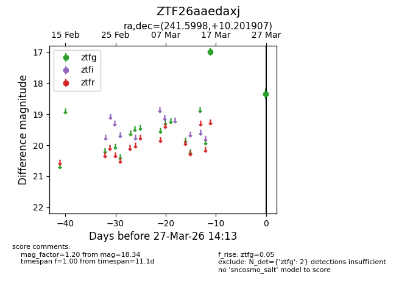
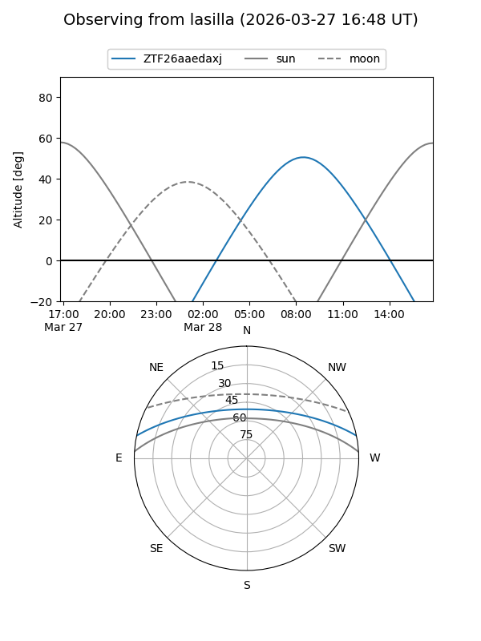
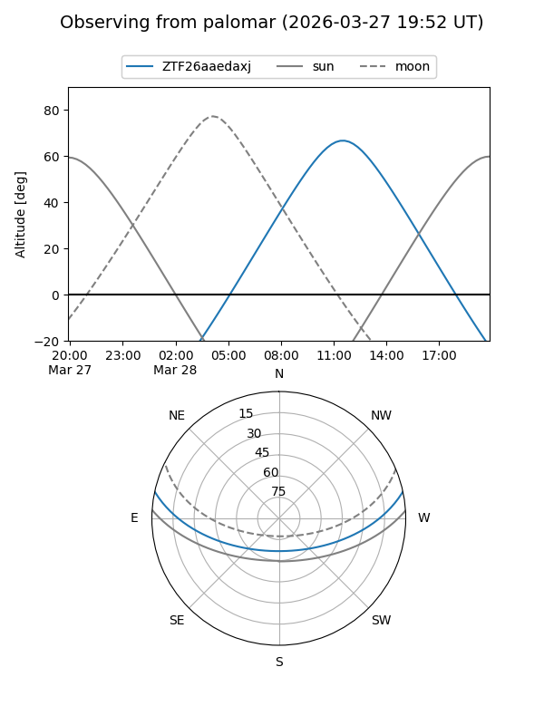

ZTF26aaedaxj
Target ZTF26aaedaxj at 2026-03-27 14:16
Aliases and brokers:
FINK: link
Lasair: link
ALeRCE: link
alt names
ZTF26aaedaxj (ztf,fink_ztf)
Coordinates:
equatorial (ra, dec) = 241.5998,+10.20191
equatorial (HMS+DMS) = 16:06:23.94,+10:12:06.86
galactic (l, b) = (22.3421,+41.17846)
Flags:
Photometry:
last ztfg=18.34
2 ztfg detections
Lightcurve

Visibility


Additional plots